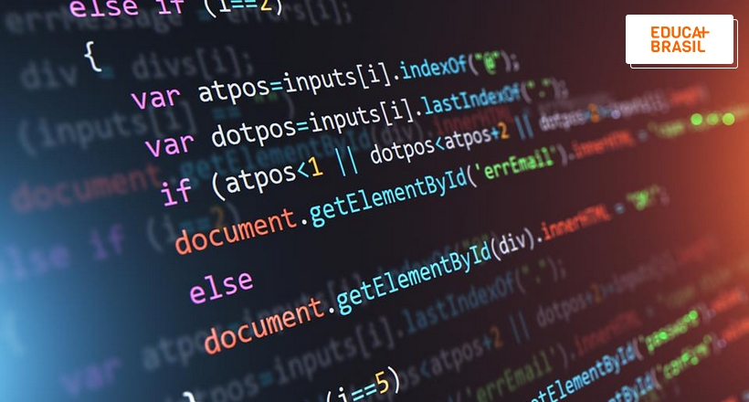

Cursos
A Escola Técnica Estadual (ETEC) é um programa de formação, mantido pelo Governo do Estado de São Paulo, que objetiva a formação de profissões de nível técnico. Mais de 228 mil alunos estão matriculados nas Etecs entre os cursos técnicos, integrados e de nível médio.
Nas unidades do Centro Paula Souza se dá através de processos seletivos, o Vestibulinho para as Etecs. Os cursos oferecidos na Etec do Centro Paula Souza é: Administração, Desinvolvimento de Sistemas, Edificações, Eletrônica e Meio Ambiente.
| Cursos | ||
|---|---|---|
| Cursos | Sobre o Curso | Imagem |
| Administração | O curso de Administração é da área de Humanas, mas agrega muitas disciplinas como Contabilidade, Economia, Estatística, Gestão Financeira e Tributária, Matemática e Logística. Ou seja: para se dar bem nessa área não basta apenas gostar do mundo das empresas, tem que saber calcular, planejar e projetar cenários futuros. |  |
| Desenvolvimento de Sistemas | O curso de Análise e Desenvolvimento de Sistemas prepara o aluno para enfrentar os desafios da profissão. No caso da formação da UCS, por exemplo, o estudante tem em suas mãos as mais modernas ferramentas para colocar em prática códigos, desenvolver softwares, explorar os mais diversos sistemas. |  |
| Edificações | O curso técnico em Edificações tem como principal objetivo fornecer conhecimentos para que o aluno tenha habilidades para interpretar e desenhar construções, elaborar orçamentos e cronogramas, gerenciar obras prediais e escolher materiais de boa qualidade. | |
| Eletrônica | O objetivo principal do curso é capacitar o aluno para desenvolver circuitos eletrônicos, montar sistemas eletrônicos e realizar a manutenção de circuitos e sistemas, seguindo as normas técnicas, ambientais, de saúde, de qualidade e de segurança no trabalho. | |
| Meio Ambiente | o aluno vai aprender a analisar amostras de água, por exemplo, para verificar se determinada indústria está cumprindo a legislação ambiental. Mas o curso também tem trabalho de campo e disciplinas voltadas à conscientização da comunidade. |